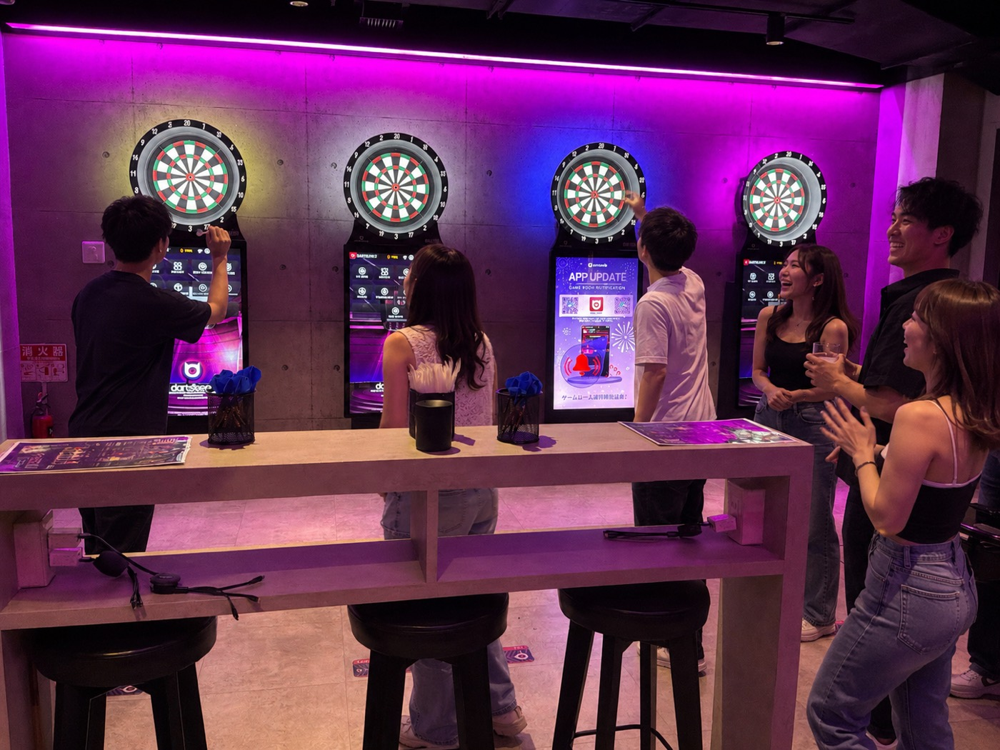

ご利用時間
19:00〜24:00まで（5時間）24:00になりましたら必ずご退店いただきます。
CONTENTS
授業や仕事のあと そのまま遊べる
満19歳限定のノンアルコールプランです
ご利用は19:00から24:00まで。

19:00〜24:00まで遊び放題
ソフトドリンク飲み放題
PLAN
| 男性 | 女性 |
|---|---|
| ¥2,500税込 | ¥500税込 |
| 男性 | 女性 |
|---|---|
| ¥3,000税込 | ¥1,000税込 |
LINEご予約で
さらに500円OFF!!RULE
19:00〜24:00まで（5時間）24:00になりましたら必ずご退店いただきます。
アルコールの提供・飲酒は一切できません。
マッチングは25歳以下の方のみ可能です。
ゴールドバンド・VIPプランはご利用いただけません。
ドリンク注文時は必ずバーカウンターにてカラーバンドをご提示ください。
スタッフの案内・指示に必ず従ってください。
お酒の提供は一切ありません。
安全に楽しむため 店内ルールを守ってご利用ください。
利用規約
※本規約は、お客様の法令上の権利を制限するものではありません。また、弊社の故意または重大な過失による損害についてまで責任を免除するものではありません。